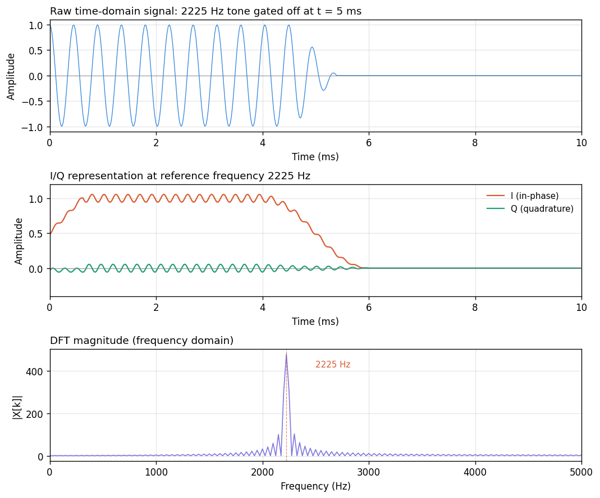

Brief notes on the I/Q representation: what it is, why it’s
legitimate, and where it shows up. Specific applications (tone
detection, modulation) are covered separately.
What I/Q is
An I/Q pair represents a signal as two numbers per sample:
an in-phase component
and a quadrature component
,
apart in phase.
Equivalently: a complex-valued sample
.
It is a time-domain representation. One pair (or
equivalently one complex number) per time index.
It is defined relative to a chosen reference
frequency
.
You cannot form an I/Q representation without picking one.
The pair describes the signal’s amplitude and phase at
,
at this moment, rather than the raw instantaneous signal
value.
So: time-domain indexing, frequency-referenced meaning. A time series
of “how much
is present, and at what phase, right now.”
Why two numbers
A sinusoid at frequency
has two degrees of freedom: amplitude
and phase
.
with
and
.
Recover the original amplitude and phase as:
A single real number per sample can’t do this — amplitude and phase
are tangled together in the waveform.
The complex-number view
Package
as
.
Using Euler’s formula
:
Magnitude = amplitude.
Angle = phase.
A complex number is a natural container for “amplitude-and-phase at
some frequency.”
Many operations become single complex multiplications:
Phase rotation: multiply by
.
Frequency shift: multiply by
.
Amplitude scaling: multiply by a real scalar.
Time-domain, not
frequency-domain
Worth spelling out, since this is a common point of confusion:
Representation
Indexed by
Each sample is
Time-domain (raw)
time
instantaneous signal value
I/Q (baseband)
time
amplitude & phase at
Frequency-domain (DFT)
frequency
amplitude & phase at that frequency
I/Q uses frequency concepts (amplitude, phase, reference frequency)
in its definition, but the resulting object is still a time
series.
Other common names for this representation:
Baseband signal — the carrier at
has been “removed,” leaving only the slow variations around it. The
signal is centered at
Hz (DC).
Complex envelope —
is the envelope (amplitude and phase) of the signal relative to
the carrier.
Concrete picture
A 2225 Hz tone gated off partway through:

Three views of the same signal: raw
time-domain samples, I/Q representation at reference frequency 2225 Hz,
and DFT magnitude.
Raw samples: wiggle rapidly at 2225 Hz, with the
tone switching off at
ms.
I/Q at
Hz: sits near
while the tone is on,
while it’s off. No 2225 Hz wiggling — it got absorbed
into the reference. Only the slow envelope remains. (The residual ripple
is an artifact of the finite lowpass filter used to produce I/Q; a
sharper filter removes it.)
DFT: one complex number per frequency bin. Energy
concentrated near 2225 Hz. No time information — you can’t tell from the
DFT alone when the tone was on or off.
I/Q is the middle view: same time resolution as raw samples, but the
fast carrier is gone and only the slow modulation remains.
Connection to the DFT
This is where most students trip, and it’s worth making explicit. A
DFT output bin is a complex number
.
A complex-valued sample in an I/Q stream is also a complex number.
Are these the same thing? Yes, in the following precise
sense.
A DFT output bin is:
Writing that out in real and imaginary parts:
These are exactly the I/Q components of the signal at reference
frequency
,
summed over the block. So:
Each DFT output bin is an I/Q pair at that bin’s
frequency.
is the amplitude at
;
is the phase at
.
A DFT is “compute one I/Q pair per frequency, for
frequencies simultaneously.” The FFT is a fast algorithm for
doing this.
This also explains why DFT inputs are allowed to be
complex-valued: they might themselves be I/Q streams, in which case the
DFT is analyzing a baseband signal. For real-valued inputs (audio,
voltages), you just set the imaginary part to zero; the DFT’s output is
complex either way.
How you get I/Q in practice
Two common paths:
Multiply (mix) and lowpass. Multiply the real
signal by
to get
,
by
to get
,
then lowpass each to kill the sum-frequency image. Produces a continuous
I/Q stream at the original sample rate. This is how software-defined
radios, lock-in amplifiers, and superheterodyne receivers work
internally.
Correlate over a block. Sum
and
over a block of
samples to get one
pair per block. This is what a DFT bin, a Goertzel filter, and a
matched-filter tone detector all compute.
First path: one I/Q pair per input sample. Second path: one pair per
block of
samples (downsampled by
).
Both are legitimately I/Q.
Where I/Q shows up
Once you start looking, it’s everywhere:
Modems and digital radio. QAM, PSK, OFDM — all
modulation schemes that encode bits as amplitude-and-phase transmit and
receive in I/Q.
Software-defined radio. SDR hardware delivers I/Q
samples at baseband; all demodulation, filtering, and decoding happens
on the complex stream.
DFT/FFT internals. As above: every bin is an I/Q
pair at that bin’s frequency.
Lock-in amplifiers. Standard lab technique for
pulling a tiny signal at a known frequency out of noise. Literally an
I/Q correlator in hardware.
Phase-locked loops. Track a reference by driving
to zero.
Radar and sonar. Pulse-compression and Doppler
processing both operate on I/Q.
MRI. The scanner acquires I/Q data; images
reconstruct from the complex k-space representation.
Things to carry forward
I/Q is a time series of (amplitude, phase) measurements at a chosen
reference frequency.
Packaging the pair as a complex number is a convenience, not a deep
statement — but it does make a lot of algebra cleaner.
You must commit to a reference frequency before you have I/Q at all.
Different reference → different representation of the same signal.
A DFT output bin is an I/Q pair at that bin’s frequency. A DFT
computes
such pairs in one shot.
When a DSP algorithm seems mysteriously to want complex numbers even
though your input is clearly real, the answer is almost always “because
it’s really operating in I/Q at some reference frequency, even if nobody
said so.”